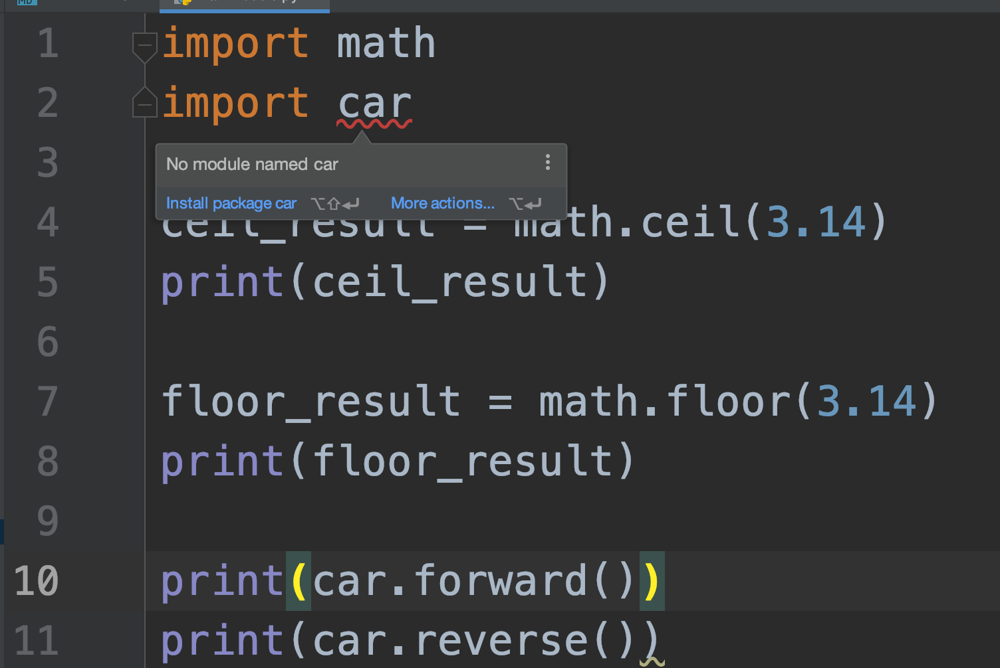
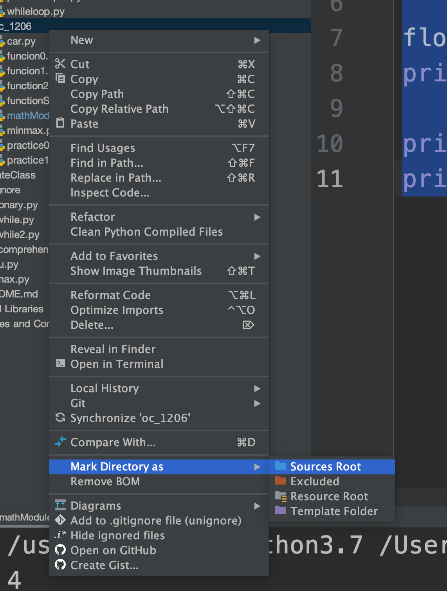
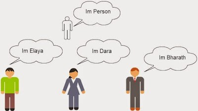
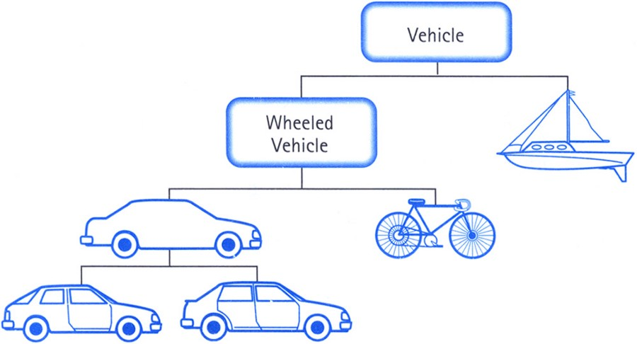

Open College -
From Python Programming
To Web Programming
#Session4 2020/01/03
Created by
Amos Dawn
## TODO * Python * Package & Module * Class & Object
Package & Module
다시 복습
### Module & Package * 다른 프로그램에서 코드를 재사용하기 위하여 책을 만들 수 있음! * 책은 패키지로 구성되며 패키지 안에 모듈이 들어있음! <img src="./images/module.png" width="400"/>
### Module car.py ``` car = "람보르기니" def forward(): print("전진합니다.") def reverse(): print("후진합니다.") ``` moduleTest.py ``` import car car.forward() car.reverse() ```
### 지난 Session에서.. * Python script의 실행은 잘 되었지만, PyCharm에서 빨간줄을 남발함 * PyCharm IDE에서 현재 경로를 default path로 설정하지 않았기 때문 
### 해결책 1. * 전체 경로를 명시해준다. ``` import oc_friday.oc_1206.car as car print(car.forward()) print(car.reverse()) ```
### 해결책 2. * PyCharm에서 Path 설정을 해준다. 
### 모듈 별명 붙이기 * as keyword를 사용하여 모듈에 원하는 별명을 붙일 수 있다. ``` import oc_friday.oc_1206.car as wow print(wow.forward()) print(wow.reverse()) ```
### 특정 함수만 Import 하기 * from keyword를 이용한다. ``` from car import forward print(forward()) ```
### 폴더 계층 지정하기 * 폴더에 계층이 있을 때에도 마찬가지로 from import를 이용 ``` from example import car car.forward() from oc.example import car car.forward() from oc.example import car as wow wow.forward() ```
Class & Object
Object Oriented Programming
### Object Oriented Programming * 컴퓨터 프로그래밍의 패러다임 * 프로그램을 단순한 명령어 목록에서 보는 시각에서 벗어나 여러개의 독립된 단위 (Object)의 모임으로 파악하고자 함 * 각각의 객체는 메시지를 주고 받고, 데이터를 처리
### OOP의 장점 * 코드 재사용성과 유연성이 대폭 증대되어 개발과 보수가 간편해짐 * 현실 세계의 모습과 비슷하여 직관적인 코드 분석이 가능
### 현실 세계의 것을 코드로 옮긴다. * 현실 세계에 보이는 것들을 객체(Object)로 구성한다. * 객체들을 추상화 즉, 공통화한 틀(Class)을 만들고 이 틀을 이용하여 Object를 만든다. 
### Object * Instance라고도 한다. * 관련된 데이터와 처리가 모여있는 하나의 단위 * 즉 처리는 함수로 묶었지만 이번엔 데이터까지 함께 묶은 것! * 현실 세계의 모든 것 * 붕어빵 ``` # 김도한이라는 객체는 이럴 것이다. name = '김도한' age = 32 address = '복정동' blood = 'A' ```
### Class * 객체들을 추상화 즉, 공통화한 틀(Class)을 만들고 이 틀을 이용하여 Object를 만든다. * 새로운 Type을 정의하는 것! * 붕어빵을 굽기 위한 틀 ``` class Human: name = '김도한' age = 32 address = '복정동' blood = 'A' ```
### Class (Cont.d) * 추상화된 것들은 생성자(Constructor)에 의해 결정된다. * Class내에 정의된 변수를 필드(Field)혹은 멤버변수(Member Variable)라 한다. * Class내에 정의된 함수를 메소드(Method)라 한다. ``` class Human: def __init__(self, name, age, address, blood): self.name = name self.age = age self.address = address self.blood = blood def printInformation(): print("이름 : " + self.name + "\n나이 : " + self.age + "\n사는 곳 : " + self.address) ```
### Class로부터 Object 만들기 * Constructor를 호출한다. 이 때 self는 생략한다. * Constructor에서 Field를 초기화 한다. * Method의 호출은 Object.(메소드명) ``` dohan = Human("도한", 23, "복정동", 'A') dohan.printInformation(); ```
### 코딩해보기 * Car라는 자동차를 추상화한 Class가 있다. * Car는 제조사, 모델, 색상, 기름양 등의 특성을 가지고, 전진과 후진을 할 수 있다. * 전진은 "[제조사] [모델] [색상]차량 전진중입니다! 현재 기름양 : [기름양] "라 표준출력에 출력한다. * 후진은 "[제조사] [모델] [색상]차량 후진중입니다! 현재 기름양 : [기름양] "라 표준출력에 출력한다. * 기름양의 초기값은 1000이고 전진 시 50, 후진 시 30이 소모된다. * Car Class를 정의하고, 3개의 Object를 생성하여 전진 후진을 각 1회 해보시오.
### 코딩해보기 (Cont.d) * 실행 결과 ``` 현대 흰색 아반떼 차량 전진중입니다! 현재 기름양 : 950 현대 흰색 아반떼 차량 후진중입니다! 현재 기름양 : 920 BMW 검은색 520D 차량 전진중입니다! 현재 기름양 : 950 BMW 검은색 520D 차량 후진중입니다! 현재 기름양 : 920 Audio 붉은색 A7 차량 전진중입니다! 현재 기름양 : 950 Audio 붉은색 A7 차량 후진중입니다! 현재 기름양 : 920 ```
### Class Hierarchy * Class에는 Hierarchy가 존재한다. * Super Class (Parent Class) * Sub Class (Child Class) 
### Class Inheritance * Sub Class에서는 Super Class의 기능을 상속받고, 새로운 기능을 추가할 수 있다. * 아래는 Super Class ``` class Book: def __init__(self, t, p): self.title = t self.price = p def printPrice(self, num): print(self.title + ':', num, '권에', self.price * num, '원') book = Book('훔쳐보는여자', 30000) book.printPrice(3) ```
### Class Inheritance (Cont.d) * 아래는 Sub Class * 상속을 받았으므로 Super Class의 method를 이용할 수 있음 ``` class ColorBook(Book): color = '보라' book = ColorBook('재밌는 그림책', 15000) book.printPrice(3) ```
### Class Inheritance (Cont.d) * Method override를 통하여 super class의 method 기능을 변경할 수 있음 ``` class ColorBook(Book): color = '보라' def printPrice(self, num) : print(self.title + ':', num, '권에', self.price * num, '원') print(self.color) book = ColorBook('재밌는 그림책', 15000) book.printPrice(2) ```
### Class Inheritance (Cont.d) * Override한 method에서 super class의 method를 호출할 수 있다. ``` class ColorBook(Book): color = '보라' def printPrice(self, num) : super().printPrice(self, num) print(self.color) book = ColorBook('재밌는 그림책', 15000) book.printPrice(2) ```
### 코딩해보기 (Cont.d) * 앞서 코딩해보기에서 정의한 Car class를 상속받아 ElectricCar를 정의한다. * ElectricCar는 기름양 대신 충전잔량을 갖는다. * 전진은 "[제조사] [모델] [색상]차량 전진중입니다! 현재 충전량 : [기름양] "라 표준출력에 출력한다. * 후진은 "[제조사] [모델] [색상]차량 후진중입니다! 현재 충전량 : [기름양] "라 표준출력에 출력한다. * 충전잔량의 초기값은 100%이고, 전진 시 10, 후진 시 5 소모된다. * ElectricCar Class를 정의하고, 3개의 Object를 생성하여 전진 후진을 각 1회 해보시오.
### 코딩해보기 (Cont.d) * 실행 결과 ``` TESLA 흰색 Model 3 차량 전진중입니다! 현재 충전량 : 90% TESLA 흰색 Model 3 차량 후진중입니다! 현재 충전량 : 85% TESLA 검은색 Model X 차량 전진중입니다! 현재 충전량 : 90% TESLA 검은색 Model X 차량 후진중입니다! 현재 충전량 : 85% TESLA 파랑색 Model 3 차량 전진중입니다! 현재 충전량 : 90% TESLA 파랑색 Model 3 차량 후진중입니다! 현재 충전량 : 85% ```
### Encapsulation * 필드는 Object 외부에서 변경 가능할 수 있으므로 직접 엑세스 하지 못하게 하는 편이 권장됨 ``` class Book: price = 15000 book = Book() book.price = 20000 class Book2: __price = 15000 book2 = Book2() book2.__price = 10000 # 값을 대입하지만 변하지 않는다. ```
### 코딩해보기 - Property * Object 내의 필드 값을 get, set, delete하는 메소드 * Python이 보이는 그림책 157 페이지를 보고 따라해보자 ``` price = property(fget = getPrice, fset = setPrice, fdel = delPrice) book1 = Book('그림책', 16800) book1.Price = 20000 # setter 호출 print(book1.price) # getter 호출 del(book1.price) # deleter 호출 ```
### 코딩해보기 - Property with decorator * @으로 시작하는 Decorator를 이용하여 property를 정의해본다. * Python이 보이는 그림책 159 페이지를 보고 따라해보자 ``` @property def price(self): return self.__price ```
### Class Method & Variable * Object와 상관없이 Class 단위로 정적인 메소드 및 변수 ``` class Book: title = '책' price = 16800 @classmethod def printMaxNum(cls): print(20) Book.printMaxNum() print(Book.title, Book.price) ```
### 코딩해보기 - Using class method & variable * 앞서 코딩해보기에서 만든 ElectricCar에 numberOfCar 메소드를 추가한다. * 이 메소드는 현재까지 차가 몇 대 생성되었는지를 출력한다. ``` TESLA 흰색 Model 3 차량 전진중입니다! 현재 충전량 : 90% TESLA 흰색 Model 3 차량 후진중입니다! 현재 충전량 : 85% 현재 출고된 차량 : 1대 TESLA 검은색 Model X 차량 전진중입니다! 현재 충전량 : 90% TESLA 검은색 Model X 차량 후진중입니다! 현재 충전량 : 85% 현재 출고된 차량 : 2대 TESLA 파랑색 Model 3 차량 전진중입니다! 현재 충전량 : 90% TESLA 파랑색 Model 3 차량 후진중입니다! 현재 충전량 : 85% 현재 출고된 차량 : 3대 ```
### 코딩해보기 * Python이 보이는 그림책 162 페이지
## Homework 1. * 안한 사람들 - 로또게임 작성해보기
## Homework 2. * 점프 투 파이썬 (https://wikidocs.net/book/1) * 05-1 클래스 * 05-2 모듈 * 05-3 패키지 * 05-4 예외처리 * 파이썬이 보이는 그림책 * 7장 파일과 예외 처리 * 8장 클래스와 오브젝트
THE END
Is there any questions?
-
amos.doan@gmail.com
-
mossol.net